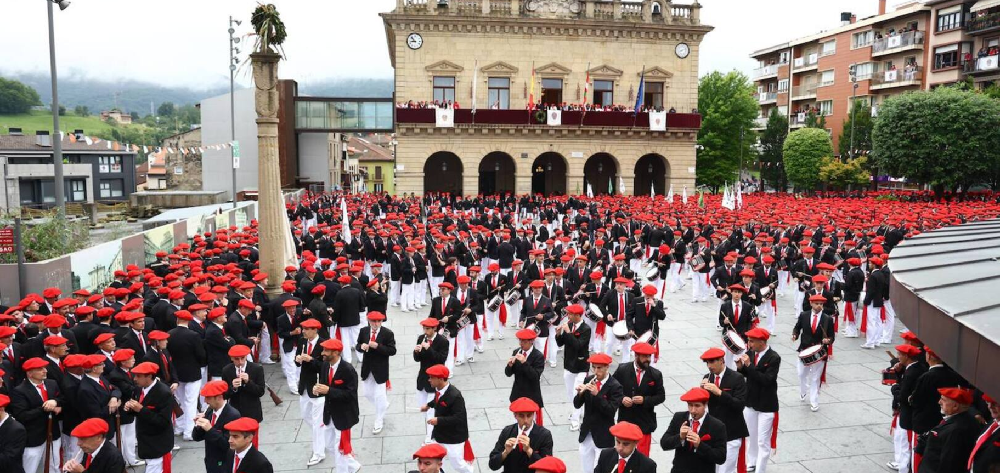
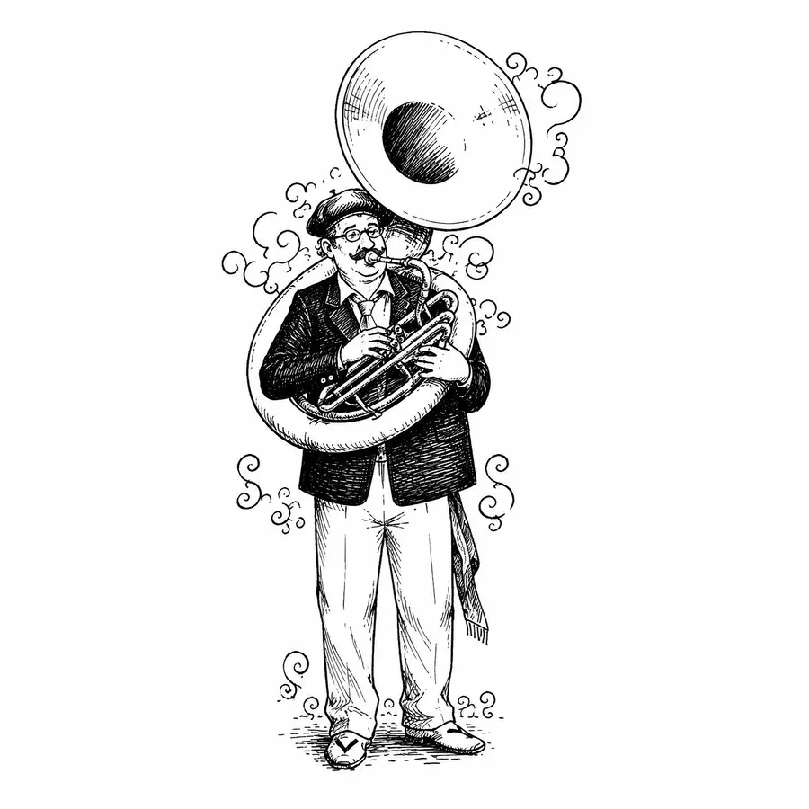
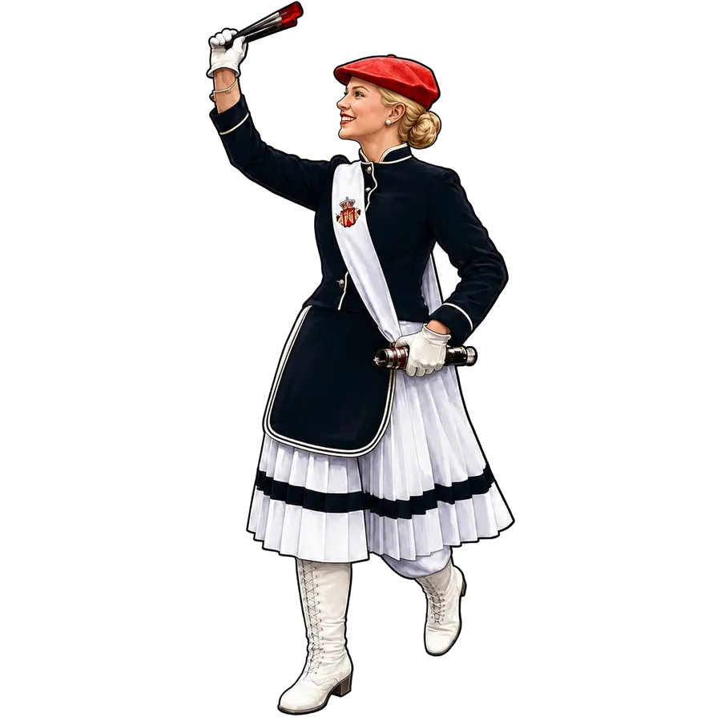
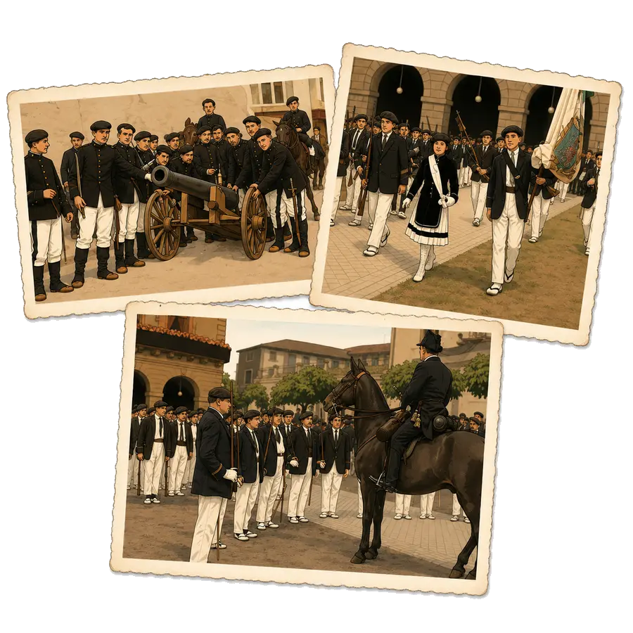

Alarde de San Marcial
Una guía informativa sobre la celebración vinculada a las fiestas de San Pedro y San Marcial: su origen histórico, el recorrido, el archivo visual y recursos útiles.
Historia
Origen, evolución y memoria local de la celebración.
Recorrido
Descripción orientativa del itinerario y recomendaciones.
Composición del Alarde
Información organizada sobre mandos, compañías y elementos del desfile.

La Música del Alarde Bandas, marchas y sonidos que acompañan la celebración.
Cantineras Información sobre una de las figuras más reconocibles del Alarde.
El Alarde en Imágenes Fotografías históricas optimizadas para consulta web. Descargas Espacio para fondos de pantalla, carteles y recursos. Enlaces Fuentes oficiales y referencias útiles para contrastar datos. Sobre mí Información sobre el proyecto y la persona que lo mantiene.